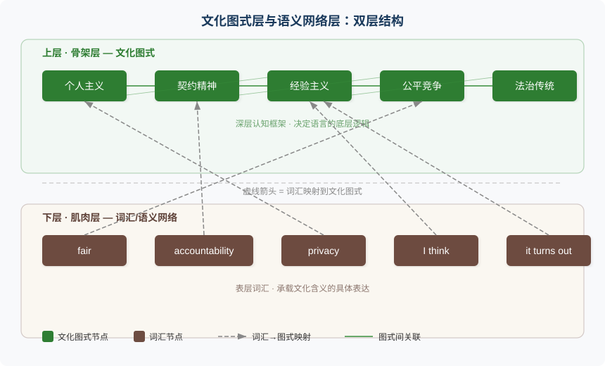
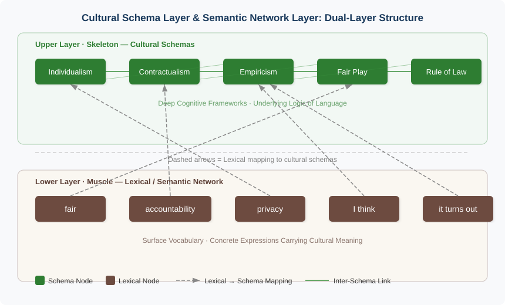

第四章：文化不是背景，是语义的骨架
Culture as Semantic Skeleton
"Language is the road map of a culture. It tells you where its people come from and where they are going." — Rita Mae Brown
核心问题：为什么不理解英语世界的文化，你就永远只能在词汇表面滑行？
4.1 一个真实的误读
2014年，INSEAD 商学院教授 Erin Meyer 出版了《文化地图》(The Culture Map)。书中记录了大量跨文化沟通失败的真实案例。其中一个场景让人印象深刻：一位亚洲高管在与美国同事开会时，对方频繁使用 "That's fair" 和 "That's interesting" 来回应他的提案。他以为对方表示认同，会后满怀信心地推进方案。几周后他才发现，美国同事其实从未同意过他的方案。那些礼貌的回应，只是英美沟通范式中"先认可再转向"(Acknowledge before Disagree)的惯例。
这种误读的代价，有时远比一次会议跑偏更严重。2018年，意大利奢侈品牌 D&G（Dolce & Gabbana）发布了一则以筷子吃意大利食物为主题的广告。品牌方大概觉得这是"文化融合"的创意表达。但中国消费者读出了另一层意思：刻板印象、居高临下、不尊重。抵制浪潮迅速席卷社交媒体，D&G 在中国市场的声誉一夜崩塌。一个词、一个手势、一段影像，文化编码读错了，后果不可逆。
回到日常场景。我第一次在国际会议上听到 "That's fair" 时，以为对方同意了我的方案。直到他紧接着说 "but let's nail down the specifics first"，我才意识到他一直在礼貌地铺垫转折。
"That's fair" 在英文语境中不等于"我同意"。它是一个语用信号(Pragmatic Signal)：我承认你的观点有一定道理，但我接下来要把话题引向另一个方向。这背后是英美文化中根深蒂固的沟通范式。Mike 不是在同意，他是在给你面子，然后亮自己的底牌。
这不是词汇量的问题。你认识 fair 这个词。问题在于，你脑中 "fair" 的语义网络只有一个中文节点："公平"。而英语母语者的 "fair" 连接着一整片文化土壤。普通法(Common Law)的程序正义、体育精神中的公平竞争、日常谈判中的"我让一步你让一步"。词典里查不到这些。
4.2 文化图式：语义网络的隐性骨架
理解不是逐字解码
Schank 和 Abelson（1977）的图式理论(Schema Theory)揭示了一个关键事实：人在理解语言时，不是把每个词的意思像积木一样拼起来，而是把输入信息匹配到脑中已有的知识框架上。你听到"餐厅"，脑中自动激活一整套图式：点菜、服务员、买单、小费。不需要别人把每个步骤解释一遍。
这套框架就是图式(Schema)。它是你过去经验的结构化沉淀，决定了你如何解释新信息、填补空白、预测下文。当你读到 "He left a generous tip" 时，你不需要额外信息就知道这发生在就餐结束后。图式替你补全了上下文。
文化图式：共享的隐性框架
Sharifian（2011）进一步提出了文化图式(Cultural Schema)的概念：特定文化共同体共享的、通常是隐性的知识框架。这些框架不在教科书里，不在词典里，而是弥漫在日常交流的每一个角落。同一文化圈的人共享这些图式，所以他们能在极少的语言线索下完成高效沟通。跨文化的人缺少这些图式，所以即使每个词都认识，也会错过真正的意思。
英语世界有五条核心文化图式。它们不是"背景知识"，而是直接塑造了词汇的语义范围和表达的语用功能：
- 个人主义(Individualism)：个体是权利和责任的基本单位
- 契约精神(Contractualism)：社会关系基于显性的规则和约定
- 经验主义(Empiricism)：知识来自观察和证据，而非权威或传统
- 公平竞争(Fair Play)：程序正义优先于结果均等
- 法治传统(Rule of Law)：规则高于个人意志
这五条图式交织在一起，构成英语语义网络的骨架层。当你听到 "accountability"，个人主义和契约精神同时被激活。当你听到 "evidence-based"，经验主义图式被调用。当你听到 "due process"，法治传统在底层支撑。不理解这些图式，你就只能抓住词的表皮，摸不到骨架。

上图的关键信息：每一个英语词汇或表达（下层）都不是孤立存在的，它向上连接着一条或多条文化图式（上层）。文化图式构成了语义的骨架，词汇是附着在骨架上的肌肉。没有骨架的肌肉，软绵绵的，站不起来。
4.3 文化深潜：五个词背后的世界
接下来逐个解剖五个英语词汇和表达。它们看起来简单，中文也有"对应词"，但那个"对应"是一种幻觉。中文对应词只覆盖了英文原词语义面积的一部分。漏掉的部分，恰恰是文化骨架撑起来的那部分。
一、Fair：不只是"公平"
打开词典查 fair，你会看到"公平的、合理的"。但这个词在英文中的真实语义版图远比词典宽广。
Fair play 是英国公学和板球场上锻造出来的概念。竞争可以激烈，但必须遵守规则。赢了不炫耀，输了不赖账。这不是中文里"公平竞争"四个字能装下的。它带着一种绅士式的自我约束：你赢不是因为你耍了手段，而是因为你在同样的规则下表现更好。在英国板球文化里，"That's not cricket"（那不符合板球精神）甚至成了"不道德"的代名词。一项运动的规则精神上升为社会道德准则，这就是文化图式的力量。
Fair trade 不只是"公平贸易"。它编码了一个特定的伦理立场：市场交易应该给弱势方合理的回报。这背后是契约精神与道德义务的交汇。你可以追求利润，但不能以践踏对方的基本权益为代价。注意 fair 在这里的用法：不是"平均分配"，而是"合理的、说得过去的"。
Fair enough 是日常对话中的高频表达，意思接近"说得过去"或"我接受这个说法"。它不是热烈的赞同，而是一种有保留的认可。我不完全同意你，但你的理由过得去，我不会继续争了。这个表达暗含了一种英美式的务实妥协：完美的公平不存在，但我们可以在"足够公平"的基础上继续合作。
That's fair 就是前面提到的那个表达。在谈判和会议语境中，它通常意味着：我承认你的观点有合理之处，但接下来我要提出我的立场。它是英美文化 "acknowledge before disagree" 范式的典型实现。先给你面子，再亮底牌。
中文的"公平"更侧重结果均等，分蛋糕要分得一样大。英文的 "fair" 更侧重程序正义(Procedural Justice)和规则一致性。不管蛋糕怎么分，分的过程必须透明，规则必须对所有人一样。这个根本性差异来自普通法(Common Law)传统：法官判案关心的不是结果是否让每个人满意，而是程序是否正当、先例是否被遵循。Fair 是这套法律哲学在日常语言中的结晶。
二、Accountability：不只是"责任"
中文里"责任"是一个大而化之的词。你对家庭有责任，对工作有责任，对社会有责任。英文把这个概念拆成了两个词，精度完全不同。
Responsibility 是广义的责任，可以是道德上的、情感上的、泛泛的。"I feel a responsibility to help"，这里的责任是内心的驱动，不需要向谁交代。
Accountability 则特指可追溯的、需要向他人交代的责任。它暗含一条关系链：你被授予了权力或资源，你必须向授予者证明你如何使用了它们。结果不好，你要承担后果。
这个词根植于两套制度。一是民主制度中的权力制衡(Checks and Balances)：总统要向国会交代，国会要向选民交代，每一层权力都有对应的问责机制。二是企业治理中的委托-代理关系(Principal-Agent Relationship)：股东委托 CEO 管理公司，CEO 必须对经营结果负 accountability。这两套制度的共同逻辑是什么？权力不是白给的，它附带着向授权者汇报的义务。
中文的"问责"接近但不等于 accountability。中文语境里的"问责"往往发生在出事之后，追究谁的责任。英文的 accountability 是事前结构：在你接受任务的那一刻，accountability 就已经建立了。它不是事后追责，而是事前契约。
在英美的项目管理实践中，RACI 矩阵(Responsible, Accountable, Consulted, Informed)把 Responsible 和 Accountable 明确分开。很多人可以 responsible（参与执行），但只有一个人 accountable（最终拍板并承担后果）。这种精细区分在中文的"负责"里完全没有对应物。
当一个美国经理说 "Who has accountability for this deliverable?"，他问的不是"出了事怪谁"。他问的是：谁在负责这个成果物，谁要定期汇报进展，谁最终要签字确认完成。整个项目管理体系建立在这个概念之上。
三、Privacy：不只是"隐私"
"隐私"这个中文词本身就是近现代从西方法律概念翻译过来的。在传统中国文化中，个体的私密空间并不是一个被特别珍视的价值。邻里之间问收入、问婚否、问生育，是关心而非冒犯。
英文的 privacy 根植于两条深厚的文化根系。第一条是个人主义传统：每个人都是独立的、完整的个体，有权决定哪些信息对外公开、哪些保留给自己。这不是法律条文赋予的权利，而是文化基因里的预设。第二条是私有财产观念：你的房子是你的城堡（My home is my castle），你的信件、日记、个人数据都是你的"财产"，未经许可不得侵入。
在英美文化中，个人空间(Personal Space)几乎是神圣的。物理上，陌生人之间保持约一臂的距离。心理上，不主动询问他人的收入、宗教信仰或政治立场。"That's personal" 不是回避，而是一道正当的边界声明。"Mind your own business"（管好你自己的事）在英文中不算粗鲁，它是对个人领地的正常防卫。
围绕 privacy 衍生出的表达极其丰富：personal space、private matter、invasion of privacy（侵犯隐私）、keep to oneself（不与人交往）、boundaries（边界）。这些表达在中文里要么没有直接对应，要么对应词的文化重量完全不同。
Hofstede（2001）的跨文化研究数据显示，英美国家在个人主义维度上的评分全球最高（美国 91，英国 89），而中国仅为 20。这不是评价优劣，而是揭示了一个事实：privacy 这个词对英语母语者激活的图式深度和广度，与中国学习者脑中"隐私"激活的图式相比，差了不止一个量级。
四、I think：不只是"我认为"
"I think we should postpone the meeting." 表面翻译："我认为我们应该推迟会议。" 但这句话在英文中的语用功能远不止"陈述看法"。
"I think" 在英文中是一个对冲标记(Hedging Marker)。它标记这是个人观点，而非客观事实，同时为对方留出了不同意的空间。说 "We should postpone the meeting" 是一个断言，可能引发对抗。加上 "I think" 后，它变成了一个可讨论的提议。
这种表达习惯根植于经验主义传统。Locke 和 Hume 奠定的哲学基础告诉英语世界：每个人的认知都有局限，所有知识都是暂时的、可修正的。所以，在表达观点时标明"这是我的看法"不是谦虚，而是认识论上的诚实。我承认我可能是错的。
对比中文。"我觉得"在中文里功能模糊：有时是真的不确定（"我觉得可能会下雨"），有时是客气套话（"我觉得你穿这件好看"），有时甚至是强化语气的前缀（"我觉得你这样做不对"，这其实是批评）。中文里"我觉得"的语用信号取决于语调和语境，而不像英文 "I think" 那样有稳定的对冲功能。
Wierzbicka（1997）在《Understanding Cultures through Their Key Words》中专门分析了英文中密集的对冲表达（I think, I suppose, I guess, I feel like, arguably, to some extent）。她指出，这套表达体系是盎格鲁文化(Anglo Culture)独特的沟通基础设施，不是个人风格，而是文化规范。
五、It turns out：没有中文直接对应
"We thought the bug was in the frontend. It turns out it was a database issue." 这句话你大概能理解。但 "it turns out" 对应中文的什么？"结果是"？"原来是"？"没想到"？哪个都不完全对。
"It turns out" 表达的是一个特定的认知动作：你之前有一个预期或假设，新的证据推翻了它，你更新了认知。它不只是在报告结果，而是在标记一次认知修正。我曾经以为 A，但事实证明是 B。注意它的主语是 "it"，一个无人称代词。不是"我发现"，不是"他告诉我"，而是"事实自己翻转了"。这种去主体化的表达方式本身就暗示了经验主义的世界观：真相不取决于谁说的，它取决于证据指向哪里。
这个表达根植于科学实证精神。科学方法的核心循环是：提出假设，收集证据，根据证据修正假设。"It turns out" 是这个循环在日常语言中的投影。英语母语者频繁使用它，因为他们的文化图式里有一个深层预设：人的认知是可错的，发现自己错了不丢人，更新认知是理性的表现。
中文里"原来是这样"接近，但它更多表达恍然大悟的情感，缺少"证据驱动的认知更新"这层理性内核。"结果是"更像单纯的叙事转折，没有"推翻预期"的含义。"没想到"带着惊讶甚至戏剧化的色彩，而 "it turns out" 的语气通常是冷静的、陈述性的。我更新了信息，现在告诉你正确的版本。
Sapir（1929）早就观察到：语言不只是表达思想的工具，它本身就在塑造思想的可能性。英文有 "it turns out" 这样精确的认知更新标记，中文没有。这不是中文的缺陷，而是两种文化对"认知修正"这个动作的关注度不同。英文世界更频繁地需要标记"我改变了看法"，因为经验主义传统要求人不断根据新证据更新立场。
4.4 政治经济历史哲学科技：五条文化根系
五个词的深潜揭示了一个模式：每个词背后都不只是一段词源，而是一整片文化土壤。这片土壤由五条根系交织而成。
政治根系：民主、分权、权利意识
英美政治传统从《大宪章》(Magna Carta, 1215)开始，逐步建立了一套分权制衡的制度。个体拥有不可剥夺的权利(inalienable rights)，政府的权力来自被治理者的同意(consent of the governed)。这条根系直接塑造了英语中大量关于权利、程序和辩论的表达：due process（正当程序）、checks and balances（制衡）、the right to...（……的权利）、speak up（大声说出来）、hold someone accountable（追究某人的责任）。
为什么英语中"辩论"类词汇如此丰富？argue, debate, dispute, contend, challenge, rebut, counter。因为议会辩论(Parliamentary Debate)在英国已有七百多年的传统。辩论不是吵架，而是制度化的意见碰撞。这套政治根系让"表达不同意见"在英语中具有正当性。"I respectfully disagree" 是一句完全正常的工作用语，不带任何冒犯。
经济根系：市场经济、契约、产权
英美是现代市场经济的发源地。Adam Smith 的《国富论》奠定了"自由交易创造繁荣"的信念。契约是一切商业关系的基础，白纸黑字，双方签字，违约有法律后果。这条根系渗透到日常英语中：deal（交易）、terms and conditions（条款）、fair deal（合理交易）、bottom line（底线/利润线）、stakeholder（利益相关者）、buy-in（认同/支持，来自股权投资的隐喻）。
商务英语之所以难学，不是因为词汇难。而是因为每个词背后都预设了契约经济的整套逻辑。"Let's get buy-in from the stakeholders" 这句话，如果你不理解利益相关者(stakeholder)理论和共识决策(consensus-building)传统，你就只能把它机械地译为"让我们获得利益相关者的支持"。你说的每个字都对，但你不理解这句话为什么要这样说。
历史根系：殖民、移民、多元文化
英语是世界上吸收外来词汇最多的语言之一。法语贡献了 government、justice、authority；拉丁语贡献了 science、education、republic；阿拉伯语贡献了 algebra、algorithm；印度语贡献了 jungle、karma。这不是偶然。大英帝国的殖民历史和美国的移民传统，使英语成为一个不断融合外来元素的开放系统。
理解这段历史，才能理解两件事。第一，为什么英语有如此多的同义词。ask（日耳曼语，口语）、inquire（法语，正式）、interrogate（拉丁语，法律/军事），三个词意思接近，但语域(Register)完全不同。选词不只是选意思，而是在选"你是谁"。第二，为什么英语对外来词汇和新表达的接受度极高。英语从不排斥"外来者"，因为它自己就是由外来者拼装而成的。
哲学根系：经验主义 vs 理性主义
Locke、Hume、Mill 奠定的英国经验主义传统主张：知识来自感官经验和观察，而非先验推理。这条根系对英语表达方式的影响是深层的。英语偏好具体、实证、可操作的表达。"Show me the data" 比 "I believe in principle" 更有说服力。"What's the evidence?" 是比 "What's the theory?" 更常见的追问。
你会注意到英语学术写作中充斥着对冲表达：arguably（可以论证地）、demonstrably（可以证明地）、it appears that（看起来）、the findings suggest（发现表明）。这不是英美学者性格含糊，这是经验主义的语言规范：一切结论都是暂时的，一切判断都要留有被新证据推翻的余地。"it turns out" 之所以在口语中高频出现，也是因为英语世界习惯于标记认知的修正和更新。经验主义精神不只住在哲学著作里，它沉淀在日常英语的每一个角落。
科技根系：科学方法、工程思维、创新叙事
英语是现代科学的通用语言。从牛顿的《自然哲学的数学原理》到今天的 Nature 和 Science，英语承载了科学方法论的核心词汇体系。科学革命发生在英语世界，科学的思维方式因此深深嵌入了英语的日常表达。
最典型的例子是假设-验证思维。英文中有一整套围绕科学方法的日常表达：hypothesis（假设）、experiment（实验）、evidence（证据）、conclusion（结论）、reproducible（可复现的）。这些词早已溢出实验室，成为日常思维工具。一个产品经理说 "Let's test that hypothesis"，一个创业者说 "We need to validate this assumption"。他们未必在做科学实验，但他们在用科学方法的思维框架组织行动。
工程思维同样渗透在英语中。Scale（扩展）、iterate（迭代）、optimize（优化）、trade-off（权衡取舍）、bottleneck（瓶颈）、leverage（杠杆/利用），这些工程概念已经成为通用商业语言。"Let's iterate on this" 不需要你是程序员也能理解。英语世界对"解决问题"有一种近乎本能的工程化倾向：拆解问题、量化指标、快速试错、持续改进。
创新叙事是英美科技文化的另一条线索。Disrupt（颠覆）、pivot（转型）、moonshot（登月式的大胆尝试）、fail fast（快速失败），这些词不只是硅谷黑话。它们编码了一种特定的文化态度：失败是可接受的，甚至是被鼓励的，只要你从中学习。中文里"失败是成功之母"是一句格言。英文里 "fail fast, learn faster" 是一套方法论。格言停留在嘴上，方法论落实到行动里。
这五条根系不是独立的管道，它们在地下交错缠绕。accountability 同时连接政治根系（权力制衡）和经济根系（委托-代理）。fair 同时连接政治根系（程序正义）和历史根系（英国普通法）。privacy 同时连接政治根系（个人权利）和哲学根系（个体认知的独立性）。"iterate" 同时连接科技根系（工程方法）和经济根系（精益创业）。
这就是为什么掌握一条根系会带来溢出效应。当你理解了经验主义，"I think""it turns out""evidence-based""arguably" 这一串词突然同时亮了起来。当你理解了科技根系，"iterate""scale""leverage""disrupt" 也一并被照亮。
4.5 实践：如何在学习中激活文化图式
你不需要去选修一门"英美文化概论"。文化图式的激活发生在日常学习的每一个微小时刻，只要你在遇到新词、新表达时多问一层。
习惯一：查词源（Etymology）
每个英语词的历史就是一段微型文化史。"Fair" 来自古英语 fæger（美丽的、合适的），后来演化出"公正的"含义，从外在的美到内在的正当。"Private" 来自拉丁语 privatus（与公共事务隔离的），它的原始含义就是"不属于公共领域的"。"Accountable" 的词根 account 来自古法语 aconter（计算、汇报），字面意思就是"需要给人算账的"。
词源不是冷知识，而是通往文化图式的快捷入口。当你看到一个词的历史演变，你就在看它背后那个文化的演变。推荐资源：Online Etymology Dictionary（etymonline.com），免费、权威、检索方便。
习惯二：看语境簇（Concordance）
一个词的真实语义不在词典里，在它被使用的上下文中。语境簇就是一个词在大量真实语料中出现的上下文集合。当你看到 "fair" 在几百个句子中分别搭配 play、trade、enough、trial、warning、chance，你会自然建立起它的语义版图，远比背一个"公平的"有效。推荐资源：COCA（Corpus of Contemporary American English）。
习惯三：对比不对等
这是最有力的习惯。每当你遇到一个中文"对应词"时，有意识地追问：英文原词有哪些含义是中文对应词覆盖不到的？差异处就是文化的断层(Cultural Fault Line)。
fair ≠ 公平。accountability ≠ 责任。privacy ≠ 隐私。I think ≠ 我觉得。
每一条断层都是一扇窗，通向英语语义网络的深层结构。
4.6 语言实验：词源考古
选三个你日常频繁使用的英语"简单词"，建议选 right、free、value。
第一步：查词源。打开 etymonline.com，输入这三个词，记录它们最早的含义和历史演变路径。
第二步：列出分叉点。在演变过程中，哪些含义是你之前不知道的？比如 right 既是"正确"又是"权利"，这两个含义在什么时候、因为什么原因合流到一个词里？free 最初的意思不是"免费"而是"被爱的人"（与 friend 同源），这说明了什么？
第三步：对比中文。记录一张表格：
| 英文词 | 词源核心含义 | 中文常见对应 | 中文覆盖不到的含义 |
|---|---|---|---|
| right | ？ | 正确 / 权利 | ？ |
| free | ？ | 自由 / 免费 | ？ |
| value | ？ | 价值 | ？ |
你会发现一个规律："简单"的词往往有最深的文化根系。越是高频使用、越是看起来不需要学的词，它的语义网络越庞大，文化图式连接越密集。反倒是 GRE 词汇表上那些生僻词，语义相对清晰，因为它们的使用场景有限。
right、free、value 这类基础词，每一个都是语义的冰山。你看到的只是水面以上那一角。那些你以为早就"学会"了的词，可能恰恰是你理解最浅的词。
4.7 总结与过渡
本章的核心论点：文化不是英语学习的附属品，而是语义网络的骨架。
Schank 和 Abelson 的图式理论告诉我们，理解语言需要调用知识框架。Sharifian 的文化图式概念告诉我们，这些框架中最深层的部分是文化共同体共享的隐性知识。Wierzbicka 的关键词研究告诉我们，一种语言的核心词汇编码了那个文化最根本的价值观。Hofstede 的跨文化数据告诉我们，这些差异是可测量的、系统性的。Sapir 的语言学洞察告诉我们，语言本身就在塑造思维的可能空间。
五个词的深潜让我们看到：fair 背后是程序正义，accountability 背后是制度化的权责链条，privacy 背后是个人主义的边界意识，"I think" 背后是经验主义的认知谦逊，"it turns out" 背后是证据驱动的认知更新。不激活这些文化图式，你的英语就只有表面结构没有深层语义。像一具有骨骼形状但没有真正骨头的软体。
到目前为止，我们已经走完了理论的全程。第一章拆掉了翻译的墙，让你看到翻译反射的三重代价。第二章触及了先于语言的"意"，揭示了思维的前语言层。第三章铺设了从意到英文的直连通路，把"用英文思考"从玄学变成了可训练的程序性知识。第四章，也就是本章，揭示了撑起语义的文化骨架，让你理解为什么单靠词汇和语法永远无法抵达英语的深层。
从第五章开始，我们进入实践：如何通过听和读，让英文世界的"意"（连同它的文化血肉）真正流进你的认知系统。
参考文献
-
Schank, R. C., & Abelson, R. P. (1977). Scripts, Plans, Goals, and Understanding: An Inquiry into Human Knowledge Structures. Lawrence Erlbaum Associates. — 图式理论的奠基之作，提出脚本(Script)概念，解释人如何通过已有知识框架理解新情境。
-
Hofstede, G. (2001). Culture's Consequences: Comparing Values, Behaviors, Institutions, and Organizations Across Nations (2nd ed.). Sage Publications. — 跨文化研究的经典之作，提出个人主义-集体主义、权力距离等六个文化维度，提供了大量可量化的跨国比较数据。
-
Wierzbicka, A. (1997). Understanding Cultures through Their Key Words: English, Russian, Polish, German, and Japanese. Oxford University Press. — 通过核心词汇的语义分析揭示文化差异，论证"关键词"是进入一种文化深层逻辑的最佳入口。
-
Sharifian, F. (2011). Cultural Conceptualisations and Language: Theoretical Framework and Applications. John Benjamins Publishing. — 系统提出文化概念化(Cultural Conceptualisation)理论，包括文化图式、文化范畴和文化隐喻三个核心概念。
-
Sapir, E. (1929). The Status of Linguistics as a Science. Language, 5(4), 207–214. — 萨丕尔关于语言与思维关系的经典论述，提出语言不只是思维的外衣，它参与塑造了思维本身。
-
Lakoff, G., & Johnson, M. (1980). Metaphors We Live By. University of Chicago Press. — 概念隐喻理论的奠基之作，论证隐喻不是修辞手法而是认知机制，深刻影响了文化语义研究的方向。
-
Meyer, E. (2014). The Culture Map: Breaking Through the Invisible Boundaries of Global Business. PublicAffairs. — 基于大量真实商业案例，系统梳理了八个维度上的跨文化沟通差异，对理解英美沟通范式尤其有参考价值。
Chapter 4: Culture Is Not Background — It Is the Semantic Skeleton
"Language is the road map of a culture. It tells you where its people come from and where they are going." — Rita Mae Brown
Core question: Why will you always skim the surface of vocabulary if you don't understand the culture of the English-speaking world?
4.1 A Real Misreading
In 2014, INSEAD professor Erin Meyer published The Culture Map. The book documents dozens of real cross-cultural communication failures in global business. One case stands out. An Asian executive was meeting with American colleagues and kept hearing responses like "That's fair" and "That's interesting" to his proposals. He took these as agreement and pushed ahead with his plan. Weeks later he discovered that his American counterparts had never actually signed on. Those polite responses were simply the Anglophone habit of "acknowledge before disagree," a conversational convention where you validate the other person's point before steering toward your own.
The cost of such misreadings can go far beyond a single derailed meeting. In 2018, Italian luxury brand Dolce & Gabbana released an ad featuring chopsticks being used to eat Italian food. The brand probably saw it as a playful "cultural fusion" concept. Chinese consumers read something else entirely: stereotyping, condescension, disrespect. A boycott swept across social media within hours, and D&G's reputation in the Chinese market collapsed overnight. One gesture, one image, one cultural code read wrong, and the damage was irreversible.
Bring it back to the everyday. The first time I heard "That's fair" in an international meeting, I assumed my counterpart agreed with my proposal. Then he followed up with "but let's nail down the specifics first," and I realized he'd been politely setting up a pivot the whole time.
"That's fair" doesn't mean "I agree" in English. It's a pragmatic signal: I grant that your point has some merit, but I'm about to steer the conversation somewhere else. Behind it sits a deeply rooted Anglophone communicative pattern. He wasn't agreeing. He was giving me face, then laying out his own position.
This isn't a vocabulary problem. You know the word fair. The problem is that the semantic network for "fair" in your head has only one Chinese node: "公平." A native English speaker's fair connects to an entire cultural substrate: procedural justice in Common Law, fair play in sport, the give-and-take of everyday negotiation. None of this shows up in the dictionary.
4.2 Cultural Schemas: The Hidden Skeleton of the Semantic Network
Understanding Is Not Word-by-Word Decoding
Schema Theory (Schank & Abelson, 1977) reveals a central fact about how people understand language. We don't assemble word meanings like bricks. Instead, we map incoming information onto pre-existing knowledge structures. Hear the word "restaurant" and a full schema fires: ordering, waiter, bill, tipping. Nobody needs to spell out each step.
That structure is the schema, the organized residue of past experience. It determines how you interpret new information, fill gaps, and predict what comes next. Read "He left a generous tip" and you don't need extra cues to know this happened after the meal. The schema fills in the context for you.
Cultural Schemas: Shared, Often Implicit, Frameworks
Sharifian (2011) takes this further with the concept of cultural schema: knowledge frameworks shared by a cultural community, usually implicit. They don't live in textbooks or dictionaries. They permeate everyday communication. Members of the same culture share these schemas and can therefore communicate efficiently with minimal linguistic cues. People from other cultures lack them, so even when every single word is recognized, the real meaning slips through.
The English-speaking world rests on five core cultural schemas. These aren't "background knowledge." They directly shape the semantic range of words and the pragmatic function of expressions:
- Individualism: the individual is the basic unit of rights and responsibilities
- Contractualism: social relations rest on explicit rules and agreements
- Empiricism: knowledge comes from observation and evidence, not authority or tradition
- Fair Play: procedural justice ranks above outcome equality
- Rule of Law: rules trump individual will
These five schemas interweave to form the skeleton layer of the English semantic network. When you hear accountability, both individualism and contractualism light up. When you hear evidence-based, the empiricist schema gets invoked. When you hear due process, the rule-of-law tradition underpins it. Without these schemas, you can only grasp the surface of words. You never reach the skeleton.

The key point of this diagram: every English word or expression (lower layer) connects upward to one or more cultural schemas (upper layer). Cultural schemas form the skeleton of meaning; vocabulary is the muscle attached to it. Muscle without skeleton is limp. It can't stand.
4.3 Cultural Deep Dive: Five Words and the Worlds Behind Them
Let's unpack five English words and expressions one by one. They look simple. Chinese has "equivalent" terms for each. But that equivalence is an illusion. The Chinese counterpart covers only part of the original English semantic territory, and what it misses is precisely the part held up by the cultural skeleton.
1. Fair: Not Just "公平"
Open a dictionary for fair and you'll find "just, reasonable." But the real semantic territory of this word in English stretches far beyond what any dictionary entry can hold.
Fair play was forged on British public-school grounds and cricket pitches. Competition can be fierce, but the rules must be followed. You don't gloat when you win or whine when you lose. This isn't reducible to the four Chinese characters for "公平竞争." It carries a gentlemanly self-restraint: you win because you performed better under the same rules, not because you gamed the system. In British cricket culture, "That's not cricket" became a synonym for "unethical." The spirit of one sport's rules rising into social morality, that's the force of a cultural schema.
Fair trade doesn't just mean "公平贸易." It encodes a specific ethical stance: market transactions should give disadvantaged parties a reasonable return. Behind it sits the intersection of contractualism and moral obligation. You can pursue profit, but not by trampling the other side's basic rights. Notice how fair works here: not "equal distribution" but "reasonable, defensible."
Fair enough is a high-frequency phrase in daily conversation, roughly meaning "that's acceptable" or "I'll take that." It's not enthusiastic agreement but qualified acknowledgment. I don't fully agree, but your reasoning is sound enough, so I won't push further. The expression carries a pragmatic compromise characteristic of Anglophone culture: perfect fairness doesn't exist, but we can keep going on the basis of "fair enough."
That's fair is the phrase from the opening story. In negotiation and meeting contexts, it usually means: I grant that your view has merit, but now I'll present mine. It's a textbook instance of the Anglophone "acknowledge before disagree" pattern. Give face first, then lay out your position.
Chinese "公平" leans toward outcome equality: the cake should be divided into equal slices. English fair leans toward procedural justice and rule consistency: however the cake gets divided, the process must be transparent and the rules must apply equally to everyone. This fundamental gap traces back to Common Law tradition. Judges don't ask whether the result satisfies everyone; they ask whether procedure was proper and precedent was followed. Fair is the crystallization of that legal philosophy in everyday language.
2. Accountability: Not Just "责任"
In Chinese, "责任" is a broad term. You have responsibilities to family, to work, to society. English splits this concept into two words with very different precision.
Responsibility is general obligation, moral, emotional, diffuse. "I feel a responsibility to help" expresses an inner drive. There's no one you must answer to.
Accountability denotes traceable obligation that must be rendered to others. It implies a relational chain: you've been given power or resources, and you must justify to the grantor how you used them. Poor outcomes? You bear the consequences.
The term is rooted in two institutional frameworks. First, checks and balances in democratic systems: the president accounts to Congress, Congress to the electorate, each layer of power paired with a corresponding accountability mechanism. Second, the principal-agent relationship in corporate governance: shareholders delegate to the CEO, and the CEO must be accountable for results. Both share the same logic: power is never free; it carries a duty to report to those who granted it.
Chinese "问责" comes close but isn't identical. In Chinese contexts, "问责" typically happens after something goes wrong: assigning blame. English accountability is a prior structure. The moment you accept a task, accountability is already established. It's not post-hoc blame but pre-agreed obligation.
In Anglo-American project management, the RACI matrix (Responsible, Accountable, Consulted, Informed) strictly separates the two. Many people can be responsible (participating in execution), but only one person is accountable (makes the final call and bears the consequences). This distinction has no counterpart in Chinese "负责."
When an American manager asks "Who has accountability for this deliverable?", they're not asking "who gets blamed if things go south." They're asking: who owns this, who reports progress regularly, who signs off on completion. The entire project management ecosystem is built on this concept.
3. Privacy: Not Just "隐私"
The Chinese word "隐私" is itself a modern translation of a Western legal concept. In traditional Chinese culture, individual private space wasn't a particularly cherished value. Neighbors asking about your income, marital status, or whether you've had children was a sign of care, not intrusion.
English privacy grows from two deep cultural roots. The first is the individualist tradition: each person is an independent, complete individual with the right to decide what information goes public and what stays private. This isn't a right conferred by statute; it's a cultural default. The second is the concept of private property: your home is your castle, your letters, diary, and personal data are your "property," and intrusion without permission is trespass.
In Anglophone culture, personal space is nearly sacred. Physically, strangers keep roughly an arm's length. Psychologically, you don't volunteer questions about someone's income, religion, or political views. "That's personal" isn't evasion; it's a legitimate boundary claim. "Mind your own business" isn't rude in English. It's normal defense of personal territory.
Expressions built around privacy are abundant: personal space, private matter, invasion of privacy, keep to oneself, boundaries. In Chinese, these either lack direct equivalents or carry very different cultural weight.
Hofstede's (2001) cross-cultural data shows Anglophone countries scoring highest on individualism (US 91, UK 89), with China at 20. This isn't a quality judgment but a measurable fact: the depth and breadth of schemas activated by privacy for native English speakers far exceeds what "隐私" activates for Chinese learners.
4. I think: Not Just "我认为"
"I think we should postpone the meeting." Surface translation: "我认为我们应该推迟会议." But the pragmatic function of this sentence in English goes well beyond stating an opinion.
"I think" in English is a hedging marker. It flags the statement as personal view rather than objective fact and opens space for disagreement. "We should postpone the meeting" is an assertion that can trigger pushback. Add "I think" and it becomes a proposal open for discussion.
This habit grows from the empiricist tradition. The philosophical foundation laid by Locke and Hume tells the English-speaking world: everyone's cognition has limits; all knowledge is provisional and revisable. Signaling "this is my view" when expressing opinions isn't humility. It's epistemic honesty. I'm admitting I might be wrong.
Compare Chinese. "我觉得" is contextually ambiguous: sometimes genuine uncertainty ("我觉得可能会下雨"), sometimes polite formula ("我觉得你穿这件好看"), sometimes even an emphatic prefix ("我觉得你这样做不对," which is really criticism). The pragmatic signal of "我觉得" in Chinese depends on tone and context, unlike the stable hedging function that "I think" carries in English.
Wierzbicka (1997), in Understanding Cultures through Their Key Words, analyzes the dense array of hedging expressions in English: I think, I suppose, I guess, I feel like, arguably, to some extent. She argues that this system is a distinctive communication infrastructure of Anglo culture. It's not personal style; it's cultural norm.
5. It turns out: No Direct Chinese Equivalent
"We thought the bug was in the frontend. It turns out it was a database issue." You can probably understand this. But what's the Chinese equivalent of "it turns out"? "结果是"? "原来是"? "没想到"? None quite fits.
"It turns out" encodes a specific cognitive action: you had an expectation or assumption, new evidence overturned it, and you updated your understanding. It doesn't just report a result; it marks a cognitive revision. I used to think A, but the facts show B. Notice the subject: "it," an impersonal pronoun. Not "I found out," not "he told me," but "the facts themselves turned over." This de-subjectivized framing itself signals an empiricist worldview: truth doesn't depend on who said it; it depends on where the evidence points.
The expression is rooted in scientific empiricism. The core cycle of scientific method is: propose hypothesis, gather evidence, revise hypothesis in light of evidence. "It turns out" is the projection of this cycle onto everyday language. Native English speakers use it constantly because their cultural schema contains a deep default: human cognition is fallible, discovering your error isn't shameful, and updating your beliefs is rational.
Chinese "原来是这样" comes close, but it conveys more the emotion of sudden realization and lacks the rational core of "evidence-driven cognitive revision." "结果是" is closer to a pure narrative turn; it doesn't carry the sense of "overturned expectation." "没想到" brings surprise or even drama; "it turns out" is usually calm and declarative. I've updated my information; here's the correct version.
Sapir (1929) observed long ago: language isn't merely a tool for expressing thought; it shapes the possibilities of thought itself. English has a precise marker for cognitive revision in "it turns out." Chinese doesn't. This isn't a defect of Chinese but a difference in how the two cultures attend to the act of revising what you know. The English-speaking world needs to mark "I changed my view" more frequently, because the empiricist tradition demands constant updating in light of new evidence.
4.4 Political, Economic, Historical, Philosophical, Technological: Five Cultural Roots
The deep dives into five words reveal a pattern: behind each word sits not just an etymology but an entire cultural soil. That soil is woven from five roots.
Political Root: Democracy, Separation of Powers, Rights Consciousness
Anglo-American political tradition, stretching from the Magna Carta (1215), gradually built a system of separated and balanced powers. Individuals possess inalienable rights; government authority derives from the consent of the governed. This root directly shapes the large vocabulary of rights, procedure, and debate in English: due process, checks and balances, the right to..., speak up, hold someone accountable.
Why is the vocabulary of debate so rich in English? Argue, debate, dispute, contend, challenge, rebut, counter. Because parliamentary debate in Britain has a tradition spanning over seven hundred years. Debate isn't quarreling; it's institutionalized exchange of opposing views. This political root makes "expressing disagreement" legitimate in English. "I respectfully disagree" is perfectly normal workplace language. It carries no offense.
Economic Root: Market Economy, Contract, Property Rights
Anglo-America is the birthplace of the modern market economy. Adam Smith's Wealth of Nations established the belief that free exchange creates prosperity. Contract is the foundation of all commercial relations: black and white, signed by both parties, with legal consequences for breach. This root permeates everyday English: deal, terms and conditions, fair deal, bottom line, stakeholder, buy-in (a metaphor borrowed from equity investment).
Business English is hard to learn not because the words are difficult, but because each word presupposes the full logic of a contract economy. "Let's get buy-in from the stakeholders" can only be mechanically translated as "让我们获得利益相关者的支持" if you don't understand stakeholder theory and the consensus-building tradition. Every word might be correct, yet you won't understand why the sentence is phrased that way.
Historical Root: Colonization, Immigration, Multiculturalism
English is one of the world's most voracious borrowers of foreign words. French contributed government, justice, authority. Latin contributed science, education, republic. Arabic contributed algebra, algorithm. Indic languages contributed jungle, karma. This isn't accidental. Britain's colonial history and America's immigrant tradition made English an open system that constantly absorbs foreign elements.
Understanding this history illuminates two things. First, why English has so many synonyms: ask (Germanic, colloquial), inquire (French, formal), interrogate (Latin, legal/military). Three near-synonyms with entirely different registers. Choosing a word isn't just choosing a meaning; it's choosing "who you are." Second, why English is so receptive to foreign words and new expressions. English never excludes "foreigners" because it was itself assembled from them.
Philosophical Root: Empiricism vs. Rationalism
The British empiricist tradition established by Locke, Hume, and Mill holds that knowledge comes from sensory experience and observation, not a priori reasoning. This root runs deep in English expression. English prefers concrete, empirical, actionable formulations. "Show me the data" carries more weight than "I believe in principle." "What's the evidence?" is a more common follow-up than "What's the theory?"
English academic writing is dense with hedging: arguably, demonstrably, it appears that, the findings suggest. Anglo-American scholars aren't being wishy-washy. This is the linguistic norm of empiricism: all conclusions are provisional, and all judgments must leave room for revision by new evidence. "It turns out" appears frequently in speech for the same reason: the English-speaking world is accustomed to marking cognitive revision. The empiricist spirit doesn't dwell only in philosophy texts. It settles into every corner of everyday English.
Technological Root: Scientific Method, Engineering Mindset, Innovation Narrative
English is the lingua franca of modern science. From Newton's Principia to today's Nature and Science, English carries the core vocabulary of scientific methodology. The scientific revolution happened in the English-speaking world, and its way of thinking became deeply embedded in everyday expression.
The most typical example is hypothesis-testing thinking. English has a full set of everyday expressions built around scientific method: hypothesis, experiment, evidence, conclusion, reproducible. These spilled out of the lab long ago and became cognitive tools for everyone. A product manager says "Let's test that hypothesis"; an entrepreneur says "We need to validate this assumption." They aren't running experiments, but they're organizing action through the framework of scientific method.
Engineering mindset likewise permeates English. Scale, iterate, optimize, trade-off, bottleneck, leverage: engineering concepts that became general business language. "Let's iterate on this" requires no programming background. The English-speaking world has an almost instinctive tendency to engineer solutions: decompose the problem, quantify metrics, run rapid trials, improve continuously.
Innovation narrative is another strand of Anglo-American tech culture. Disrupt, pivot, moonshot, fail fast. These aren't just Silicon Valley jargon; they encode a specific cultural attitude: failure is acceptable, even encouraged, as long as you learn from it. In Chinese, "失败是成功之母" is a proverb. In English, "fail fast, learn faster" is a methodology. Proverbs sit on your lips. Methodologies drive your actions.
These five roots aren't separate pipes; they intertwine underground. Accountability connects to both the political root (checks and balances) and the economic root (principal-agent). Fair connects to both the political root (procedural justice) and the historical root (British Common Law). Privacy connects to both the political root (individual rights) and the philosophical root (autonomy of individual cognition). Iterate connects to both the technological root (engineering methods) and the economic root (lean startup). That's why mastering one root yields spillover effects. Once you understand empiricism, the cluster "I think," "it turns out," "evidence-based," and "arguably" suddenly lights up together. Once you understand the technological root, "iterate," "scale," "leverage," and "disrupt" all illuminate as well.
4.5 Practice: Activating Cultural Schemas in Learning
You don't need to enroll in an "Introduction to Anglo-American Culture" course. Schema activation happens in every small moment of daily learning, whenever you ask one more question upon encountering a new word or expression.
Habit One: Check Etymology
The history of each English word is a miniature cultural history. Fair comes from Old English fæger (beautiful, suitable), later evolving toward "just": a journey from external beauty to internal propriety. Private comes from Latin privatus (separated from public affairs); its original meaning is literally "not belonging to the public sphere." Accountable stems from the root account, from Old French aconter (to reckon, to report): literally "having to give someone an account."
Etymology isn't trivia. It's a shortcut into cultural schemas. When you trace a word's historical evolution, you're watching the evolution of the culture behind it. Recommended resource: Online Etymology Dictionary (etymonline.com), free, authoritative, and easy to search.
Habit Two: Look at Concordance
A word's true semantics doesn't live in the dictionary; it lives in the contexts where the word is used. A concordance is a collection of real-world contexts in which a word appears across large corpora. When you see fair in hundreds of sentences collocating with play, trade, enough, trial, warning, and chance, you naturally build its semantic territory. That's far more effective than memorizing "fair = just." Recommended resource: COCA (Corpus of Contemporary American English).
Habit Three: Compare Non-Equivalence
This is the most powerful habit. Whenever you encounter a Chinese "equivalent," consciously ask: what meanings of the original English word does the Chinese counterpart fail to cover? The gap is the cultural fault line.
fair ≠ 公平. accountability ≠ 责任. privacy ≠ 隐私. I think ≠ 我觉得.
Each fault line is a window into the deep structure of the English semantic network.
4.6 Language Experiment: Etymology Archaeology
Choose three "simple" English words you use frequently. Suggested picks: right, free, value.
Step One: Look up etymology. Go to etymonline.com, enter the three words, and record their earliest meanings and historical evolution.
Step Two: Identify branching points. During evolution, which meanings were you unaware of? For instance, right means both "correct" and "entitlement": when and why did these converge in a single word? Free originally meant "beloved" (cognate with friend), not "without cost." What does that tell us?
Step Three: Compare with Chinese. Create a table:
| English Word | Etymonic Core Meaning | Common Chinese Equivalent | What Chinese Fails to Cover |
|---|---|---|---|
| right | ? | 正确 / 权利 | ? |
| free | ? | 自由 / 免费 | ? |
| value | ? | 价值 | ? |
You'll find a pattern: "simple" words often have the deepest cultural roots. The more frequently a word is used, the more it seems like it doesn't need studying, the larger its semantic network and the denser its cultural-schema connections. Ironically, the obscure words on GRE vocabulary lists have relatively clear semantics because their usage contexts are limited. But right, free, value: each is a semantic iceberg. You see only the tip above water. The words you thought you'd "learned" long ago may be precisely the ones you understand most shallowly.
4.7 Summary and Transition
The core argument of this chapter: culture isn't an add-on to English learning; it's the skeleton of the semantic network.
Schank and Abelson's Schema Theory shows that understanding language requires invoking knowledge frameworks. Sharifian's cultural schema concept shows that the deepest of these frameworks are implicit knowledge shared by cultural communities. Wierzbicka's keyword research shows that a language's core vocabulary encodes that culture's most fundamental values. Hofstede's cross-cultural data shows these differences are measurable and systematic. Sapir's linguistic insight shows that language itself shapes the space of possible thought.
The five-word deep dives reveal what lies beneath: behind fair is procedural justice; behind accountability is an institutionalized chain of power and responsibility; behind privacy is individualist boundary consciousness; behind "I think" is empiricist epistemic humility; behind "it turns out" is evidence-driven cognitive revision. Without activating these cultural schemas, your English has surface structure but no deep semantics. It's like a soft body with the shape of a skeleton but no real bones.
So far we've traveled the full theoretical path. Chapter 1 dismantled the wall of translation and showed the triple cost of translation-mediated learning. Chapter 2 reached the pre-linguistic yì (pre-linguistic meaning-intention), revealing the layer of thought before language. Chapter 3 laid the direct pathway from yì to English, turning "thinking in English" from metaphysics into trainable procedural knowledge. Chapter 4, this chapter, revealed the cultural skeleton that upholds semantics, explaining why vocabulary and grammar alone can never reach the depths of English.
From Chapter 5 onward, we move into practice: how to let the English-speaking world's yì, together with its cultural flesh, truly flow into your cognitive system through listening and reading.
References
-
Schank, R. C., & Abelson, R. P. (1977). Scripts, Plans, Goals, and Understanding: An Inquiry into Human Knowledge Structures. Lawrence Erlbaum Associates. Foundational work on schema theory; introduces the Script concept and explains how people use existing knowledge frameworks to understand new situations.
-
Hofstede, G. (2001). Culture's Consequences: Comparing Values, Behaviors, Institutions, and Organizations Across Nations (2nd ed.). Sage Publications. Classic cross-cultural research; proposes six cultural dimensions including individualism-collectivism and power distance, with extensive quantitative cross-national comparison data.
-
Wierzbicka, A. (1997). Understanding Cultures through Their Key Words: English, Russian, Polish, German, and Japanese. Oxford University Press. Reveals cultural differences through semantic analysis of core vocabulary; argues that "key words" are the best entry point into the deep logic of a culture.
-
Sharifian, F. (2011). Cultural Conceptualisations and Language: Theoretical Framework and Applications. John Benjamins Publishing. Systematically proposes the theory of cultural conceptualisation, including three core concepts: cultural schema, cultural category, and cultural metaphor.
-
Sapir, E. (1929). The Status of Linguistics as a Science. Language, 5(4), 207–214. Sapir's classic argument on language and thought; proposes that language is not merely the garment of thought but participates in shaping thought itself.
-
Lakoff, G., & Johnson, M. (1980). Metaphors We Live By. University of Chicago Press. Foundational work on conceptual metaphor theory; argues that metaphor is not rhetorical ornament but cognitive mechanism, profoundly influencing the direction of cultural semantic research.
-
Meyer, E. (2014). The Culture Map: Breaking Through the Invisible Boundaries of Global Business. PublicAffairs. Drawing on extensive real business cases, systematically maps cross-cultural communication differences across eight dimensions; especially valuable for understanding Anglophone communication norms.